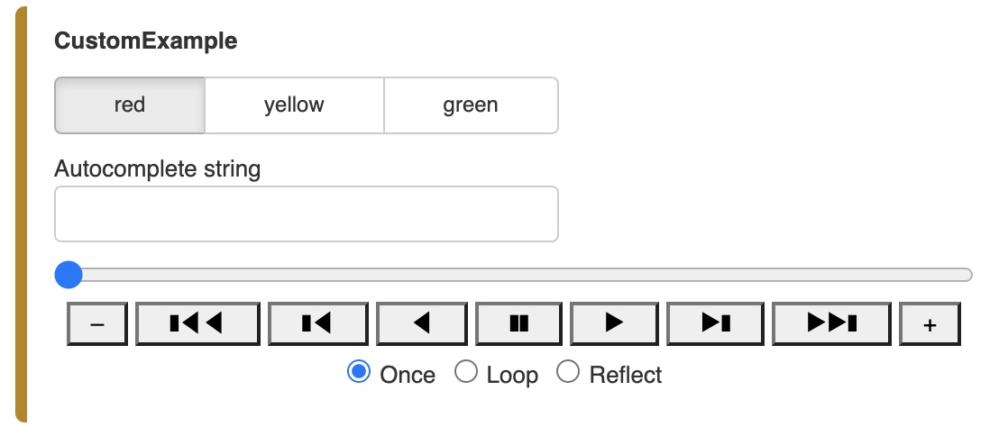

Parameters are Python attributes extended using the Param library to support types, ranges, and documentation, which turns out to be just the information you need to automatically create widgets for each parameter.
Parameters and widgets
# To use this approach, first declare some Parameterized classes with various Parameters:
import param
import pandas as pd
import datetime as dt
class BaseClass(param.Parameterized):
x = param.Parameter(default=3.14, doc="X position")
y = param.Parameter(default="Not editable", constant=True)
string_value = param.String(default="str", doc="A string")
num_int = param.Integer(50000, bounds=(-200, 100000))
unbounded_int = param.Integer(23)
float_with_hard_bounds = param.Number(8.2, bounds=(7.5, 10))
float_with_soft_bounds = param.Number(0.5, bounds=(0, None), softbounds=(0,2))
unbounded_float = param.Number(30.01, precedence=0)
hidden_parameter = param.Number(2.718, precedence=-1)
integer_range = param.Range(default=(3, 7), bounds=(0, 10))
float_range = param.Range(default=(0, 1.57), bounds=(0, 3.145))
dictionary = param.Dict(default={"a": 2, "b": 9})
class Example(BaseClass):
"""An example Parameterized class"""
timestamps = []
boolean = param.Boolean(True, doc="A sample Boolean parameter")
color = param.Color(default='#FFFFFF')
date = param.Date(dt.datetime(2017, 1, 1),
bounds=(dt.datetime(2017, 1, 1), dt.datetime(2017, 2, 1)))
dataframe = param.DataFrame(pd._testing.makeDataFrame().iloc[:3])
select_string = param.ObjectSelector(default="yellow", objects=["red", "yellow", "green"])
select_fn = param.ObjectSelector(default=list,objects=[list, set, dict])
int_list = param.ListSelector(default=[3, 5], objects=[1, 3, 5, 7, 9], precedence=0.5)
single_file = param.FileSelector(path='../../*/*.py*', precedence=0.5)
multiple_files = param.MultiFileSelector(path='../../*/*.py?', precedence=0.5)
record_timestamp = param.Action(lambda x: x.timestamps.append(dt.datetime.utcnow()),
doc="""Record timestamp.""", precedence=0.7)
Example.num_int
# To use these parameters in panel
import panel as pn
pn.extension()
base = BaseClass()
pn.Row(Example.param, base.param)
Custom Widgets
In the previous section we saw how parameters can automatically be turned into widgets. This is possible because internally Panel maintains a mapping between parameter types and widget types.
Using the widgets keyword we can declare a mapping between the parameter name and the type of widget that is desired.
class CustomExample(param.Parameterized):
"""An example Parameterized class"""
select_string = param.Selector(objects=["red", "yellow", "green"])
autocomplete_string = param.Selector(default='', objects=["red", "yellow", "green"], check_on_set=False)
select_number = param.Selector(objects=[0, 1, 10, 100])
pn.Param(CustomExample.param, widgets={
'select_string': pn.widgets.RadioButtonGroup,
'autocomplete_string': pn.widgets.AutocompleteInput,
'select_number': pn.widgets.DiscretePlayer}
)

Instead of passing the widget, pass a dictionary with the desired options. Use the widget_type keyword to map the widget.
pn.Param(CustomExample.param, widgets={
'select_string': {'widget_type': pn.widgets.RadioButtonGroup, 'button_type': 'success'},
'autocomplete_string': {'widget_type': pn.widgets.AutocompleteInput, 'placeholder': 'Find a color...'},
'select_number': pn.widgets.DiscretePlayer}
)
However it is also possible to explicitly construct a widget from a parameter using the .from_param method, which makes it easy to override widget settings using keyword arguments:
pn.widgets.IntSlider.from_param(Example.param.unbounded_int, start=0, end=100)
Custom Name
pn.Param(CustomExample.param, name="Custom Name")
Sort
pn.Param(CustomExample.param, sort=True, name="Sort by Label Example")
Parameter Dependencies
import numpy as np
class Sine(param.Parameterized):
phase = param.Number(default=0, bounds=(0, np.pi))
frequency = param.Number(default=1, bounds=(0.1, 2))
# use param.depends decorator to link function with params
@param.depends('phase', 'frequency')
def view(self):
y = np.sin(np.linspace(0, np.pi * 3, 40) * self.frequency + self.phase)
y = ((y - y.min()) / y.ptp()) * 20
array = np.array(
[list((' ' * (int(round(d)) - 1) + '*').ljust(20)) for d in y])
return pn.pane.Str('\n'.join([''.join(r) for r in array.T]), height=380, width=500)
sine = Sine(name='ASCII Sine Wave')
pn.Row(sine.param, sine.view)
Parameterized classes can therefore be a very useful pattern for encapsulating a part of a computational workflow with an associated visualization, declaratively expressing the dependencies between the parameters and the computation.
# this code gives a phase widget, while maintaining sine.frequency at the initial value of 1:
pn.Row(pn.panel(sine.param, parameters=['phase']), sine.view)
In order to link the two we express the dependency using the param.depends decorator and then ensure that we will run the method whenever the continent changes by setting watch=True.
class GoogleMapViewer(param.Parameterized):
continent = param.ObjectSelector(default='Asia', objects=['Africa', 'Asia', 'Europe'])
country = param.ObjectSelector(default='China', objects=['China', 'Thailand', 'Japan'])
_countries = {'Africa': ['Ghana', 'Togo', 'South Africa', 'Tanzania'],
'Asia' : ['China', 'Thailand', 'Japan'],
'Europe': ['Austria', 'Bulgaria', 'Greece', 'Portugal', 'Switzerland']}
@param.depends('continent', watch=True)
def _update_countries(self):
countries = self._countries[self.continent]
self.param['country'].objects = countries
self.country = countries[0]
@param.depends('country')
def view(self):
iframe = """
<iframe width="800" height="400" src="https://maps.google.com/maps?q={country}&z=6&output=embed"
frameborder="0" scrolling="no" marginheight="0" marginwidth="0"></iframe>
""".format(country=self.country)
return pn.pane.HTML(iframe, height=400)
viewer = GoogleMapViewer(name='Google Map Viewer')
pn.Row(viewer.param, viewer.view)
Indeed, if you specify watch=True for such a method, the method will get invoked twice each time a dependency changes (once by Param internally and once by Panel), so you should reserve watch=True only for methods that aren’t otherwise being monitored for dependencies.
Parameter subobjects
from bokeh.plotting import figure
class Shape(param.Parameterized):
radius = param.Number(default=1, bounds=(0, 1))
def __init__(self, **params):
super(Shape, self).__init__(**params)
self.figure = figure(x_range=(-1, 1), y_range=(-1, 1))
self.renderer = self.figure.line(*self._get_coords())
def _get_coords(self):
return [], []
def view(self):
return self.figure
class Circle(Shape):
n = param.Integer(default=100, precedence=-1)
def _get_coords(self):
angles = np.linspace(0, 2 * np.pi, self.n + 1)
return (self.radius * np.sin(angles),
self.radius * np.cos(angles))
@param.depends('radius', watch=True)
def update(self):
xs, ys = self._get_coords()
self.renderer.data_source.data.update({'x': xs, 'y': ys})
class NGon(Circle):
n = param.Integer(default=3, bounds=(3, 10), precedence=1)
@param.depends('radius', 'n', watch=True)
def update(self):
xs, ys = self._get_coords()
self.renderer.data_source.data.update({'x': xs, 'y': ys})
# The important thing to note here is that the param.depends decorator can not only depend on parameters on the object itself but also on specific parameters on the subobject, e.g. shape.radius, or on all parameters of the subobject, expressed as shape.param
shapes = [NGon(), Circle()]
class ShapeViewer(param.Parameterized):
shape = param.ObjectSelector(default=shapes[0], objects=shapes)
@param.depends('shape')
def view(self):
return self.shape.view()
@param.depends('shape', 'shape.radius')
def title(self):
return '## %s (radius=%.1f)' % (type(self.shape).__name__, self.shape.radius)
def panel(self):
return pn.Column(self.title, self.view)
viewer = ShapeViewer()
pn.Row(viewer.param, viewer.panel())